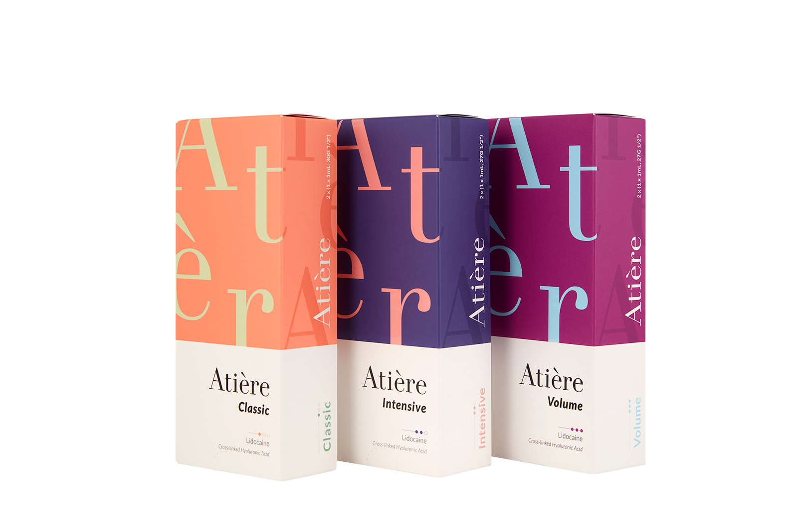
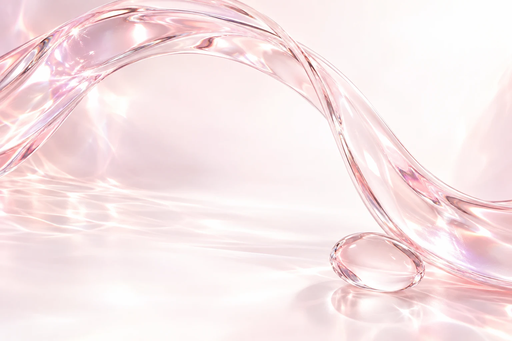
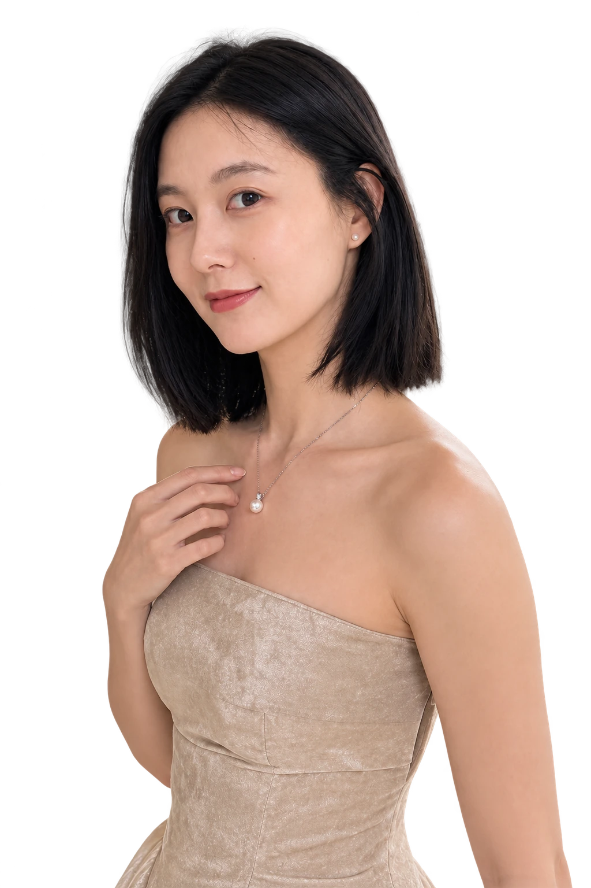
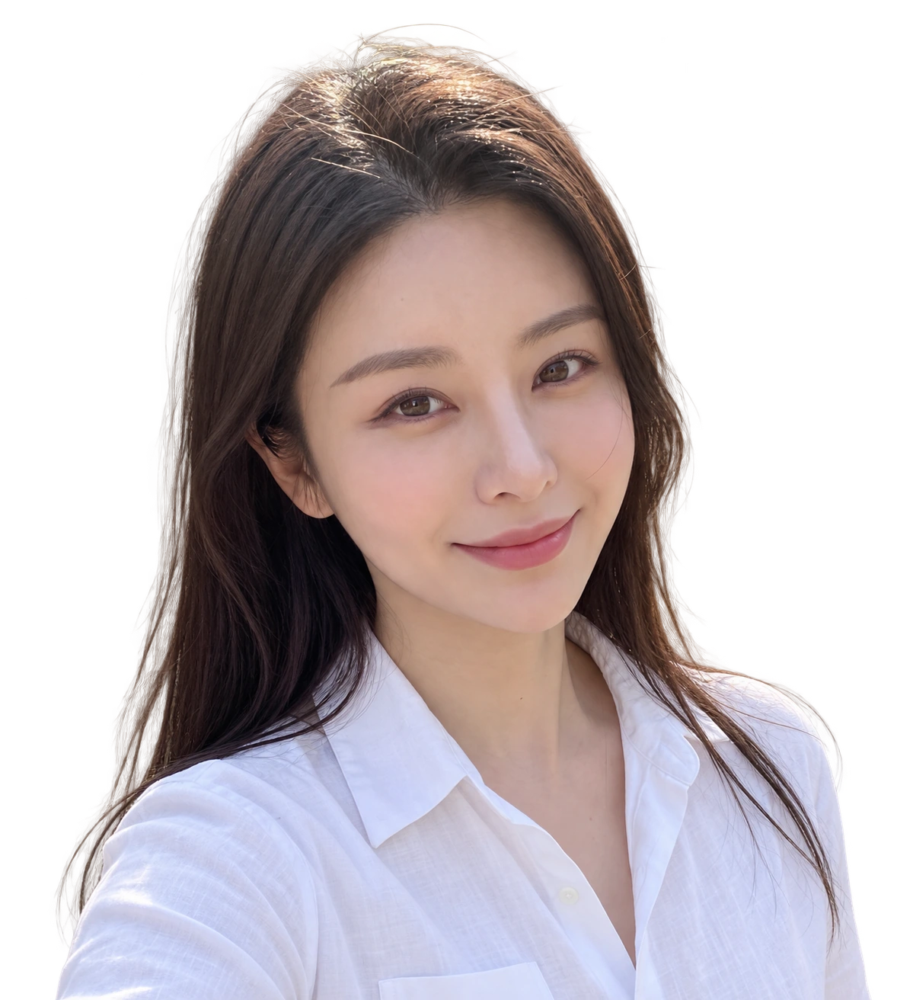
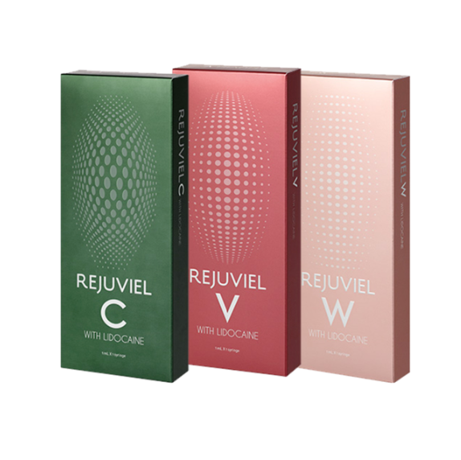
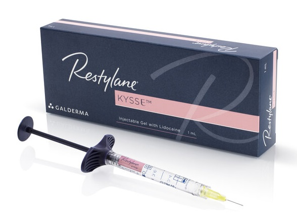
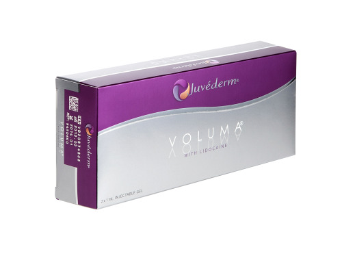
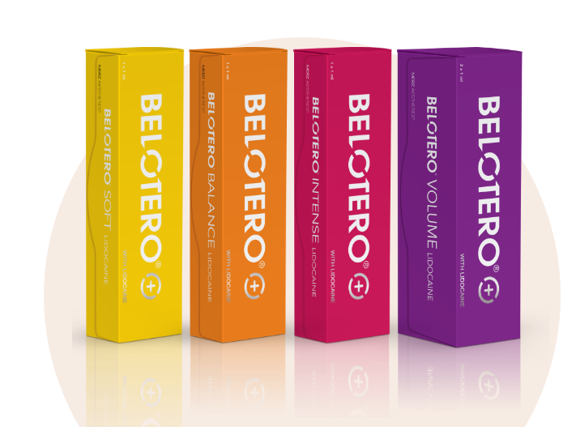

아띠에르
적용 부위와 원하는 볼륨에 맞춰 제품의 특성을 확인합니다.


Volume,
in balance.
필러는 볼륨을 보완하고 윤곽을 다듬는 시술입니다. 얼굴의 비율과 조직 상태, 원하는 변화에 맞춰 시술 부위와 제품을 선택합니다.
히알루론산 필러는 젤 형태의 재료로 볼륨을 보완합니다. 같은 얼굴이라도 입술·볼·턱끝처럼 부위의 움직임과 조직 특성이 달라 접근도 달라집니다.
나에게 맞는 필러 상담하기관심 부위를 선택해 상담 포인트를 확인해 보세요.

입술
Find your fit.
원내 안내 중인 다섯 가지 히알루론산 필러 브랜드입니다. 제품별 특성과 적용 부위를 확인해 상담합니다.

적용 부위와 원하는 볼륨에 맞춰 제품의 특성을 확인합니다.

부위의 움직임과 조직 상태를 고려해 제품을 선택합니다.

같은 브랜드 안에서도 제품 종류와 사용 목적을 확인합니다.

원하는 윤곽과 촉감, 부위별 특성을 함께 고려합니다.

피부와 조직 상태, 필요한 볼륨에 맞춰 상담합니다.
제품군과 준비된 제품은 상담 시 확인해 주세요. 특정 브랜드가 모든 부위에 동일하게 적합한 것은 아닙니다.
원하는 변화와 이전 시술 이력, 얼굴의 비율과 조직 상태를 살펴봅니다.
적합한 제품과 필요한 양, 시술 방법과 주의사항을 함께 안내합니다.
초기 붓기와 회복 경과를 안내하고 변화에 따라 확인 계획을 정합니다.
After your visit.
시술 직후에는 붓기·멍·붉어짐·압통이 나타날 수 있습니다. 중요한 일정이 있다면 미리 알려주시고, 시술 부위에 강한 압박을 가하지 않도록 원내 안내를 따라주세요.
혈관 폐색·감염·알레르기 등의 합병증이 생길 수 있습니다. 심한 통증이나 피부색 변화, 시야 변화가 나타나면 즉시 의료진에게 알리고 진료를 받으세요.
Your
questions.
필러는 조직에 재료를 주입해 볼륨을 보완하거나 윤곽을 다듬는 시술입니다. 히알루론산 필러는 젤 형태의 재료를 사용하며, 부위와 제품에 따라 적합한 시술 계획이 달라집니다.
보톡스는 근육의 움직임을 일시적으로 줄이는 데 사용하고, 필러는 볼륨이나 윤곽을 보완하는 데 사용합니다. 같은 부위의 고민이라도 원인이 달라 상담 후 적합한 방법을 정합니다.
입술의 두께와 경계, 좌우 균형, 웃을 때의 움직임을 함께 살펴봅니다. 원하는 모양과 이전 시술 이력을 알려주시면 얼굴 전체의 비율을 고려해 상담합니다.
제품 이름만으로 결정하기보다 적용 부위, 조직의 상태, 원하는 변화와 제품의 특성을 함께 고려합니다. 같은 브랜드 안에서도 제품 종류와 허가된 사용 목적이 다를 수 있습니다.
필요한 양은 현재 볼륨과 비율, 이전 필러의 잔존 여부, 원하는 변화에 따라 달라집니다. 사진이나 부위 이름만으로 정하지 않고 진찰 후 안내합니다.
주입 후 볼륨 변화를 볼 수 있지만 초기 붓기가 함께 나타날 수 있어 경과를 보며 평가합니다. 유지 기간은 재료, 제품, 부위, 주입량과 개인 상태에 따라 달라집니다.
회복 정도에는 개인차가 있습니다. 일시적으로 붓기·멍·붉어짐·압통이 생길 수 있으므로 중요한 일정이 있다면 상담 때 알려주세요.
가능합니다. 이전 시술 부위와 시기, 제품명과 주입량을 알고 있다면 함께 알려주세요. 남아 있는 필러와 현재 조직 상태를 확인한 뒤 추가 시술 여부를 판단합니다.
히알루론산 필러는 상태에 따라 히알루로니다제를 이용한 분해를 검토할 수 있습니다. 모든 종류의 필러에 적용되는 것은 아니며 제거 가능 여부와 필요한 치료는 의료진이 판단합니다.
평소와 다른 심한 통증, 피부가 하얗거나 회색·푸른색으로 변하는 증상, 시야 변화가 나타나면 즉시 의료진에게 알리고 진료를 받아야 합니다. 시야 변화 등 응급 증상은 응급의료기관으로 바로 이동하세요.
나에게 맞는 이벤트를 펼쳐보세요.

Find your balance.
홍대·합정 뷰티블라썸의원
관심 부위와 이전 시술 이력을 함께 알려주세요.
뷰티블라썸의원 필러 안내 · 원내 제품 목록과 기존 시술 안내
FDA 필러 일반 정보 · 작용과 경과, 주의사항에 대한 참고 자료. 국내 허가 범위는 제품별로 확인합니다.